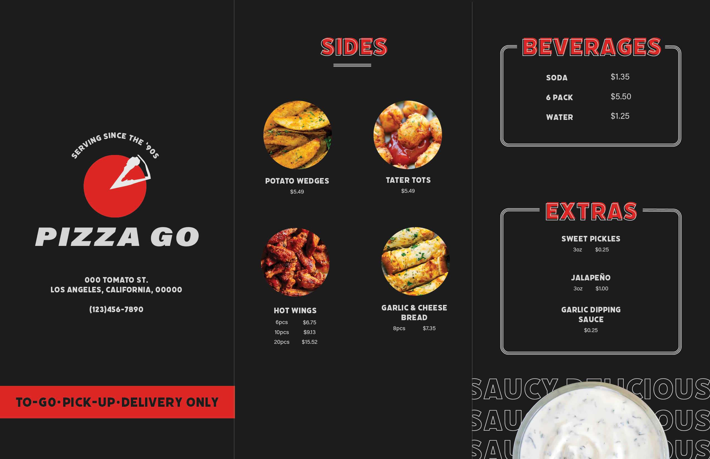
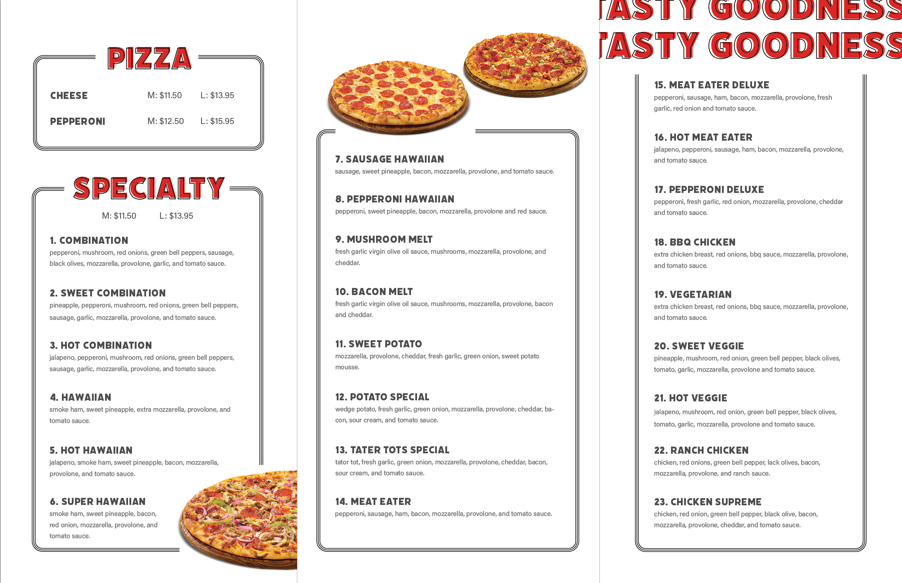

MENU DESIGN


PIZZA GO MENU (personal project)
PIZZA GO is a pizza shop located in the LA area. As a regular customer myself, I decided to take a chance at re-designing their menu to give it more personality, as the current menu is fairly simple. I utilized PIZZA GO's current logo and the brands existing color palette. I decided us offset lettering in order to give the menu a hipster touch that would appeal to a younger audience. Rounded borders were used to create a separation between each section of the menu. Finally, pictures of the menu items are dispersed throughout the menu to give a visual element for customers to refer to when purchasing their foods.